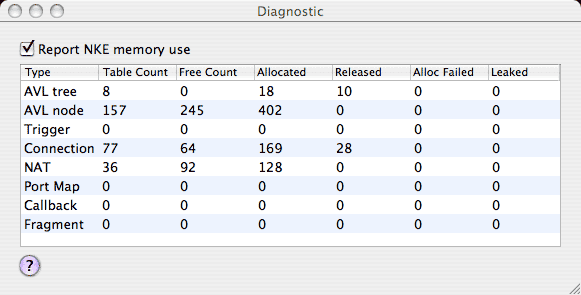

The Diagnostic window accessed under the Help menu is intended for testing or observing internal behavior of the application software itself. Currently it can be used to monitor the memory allocation behavior of the NKE (Network Kernel Extension). The IPNetRouterX (IPNetSentryX) NKE maintains a number of tables to track network connections and other activity. Each table entry corresponds to a block of kernel memory that must be allocated and tracked until it is no longer needed. When "Report NKE memory use" is selected, the NKE reports these memory stats once each second for display in a window as shown below.

The NKE makes extensive use of AVL trees for fast and efficient searching. "AVL tree" reports the number of trees allocated, and "AVL node" is the number of nodes on all such trees. To reduce the overhead of calling the memory allocator each time a block is needed, the NKE maintains a free list for each type of memory block (table entry). As entries are no longer needed, they are first added to the corresponding free list for easy re-use, and only later released back into the kernel memory pool.
The columns of the table show the Type of memory block or table entry, the number of entries in the corresponding table (Table Count), the number of entries in the corresponding free list (Free Count), the total number of such blocks allocated and released, the number of times a requested allocation failed, and the number of blocks that cannot be accounted for (allocated but not on any list or released).
The Trigger, Connection, NAT, and Port Map tables are largely self evident. The Callback table is used for TCP Rate Limiting to track pending window advertisements that are being withheld (in time sequence order) to maintain the desired send rate for each TCP connection. The Fragment table is used to hold connection endpoint information for subsequent datagram fragments that do not contain the necessary protocol headers and reflects the number of fragmented IP datagrams recently seen.
As traffic on your network increases, you can observe the dynamic memory behavior of the NKE to confirm it is running smoothly. While it may seem odd to run out of memory on today's machines with hundreds of megabytes of fast RAM and gigabytes of virtual memory, kernel memory is much more restricted and can run short. Kernel memory must be wired down to be available at interrupt time so cannot be remapped on demand. Since this memory is not available for other uses, the system maintains only a modest pool of kernel memory with the understanding that it can add more periodically if needed. If a user tries to import 10,000 trigger entries from a Real time Black List, the kernel is not going to have enough memory to accept all of this data at one time. In this case, IPNetRouterX will attempt to download the table in segments such that if a kernel memory allocation fails, it can pause briefly before resuming the download. You can observe this behavior directly in the diagnostic window.
NKEs must be prepared to deal with the possibility that any memory allocation could fail, and not hold up the rest of the system waiting for memory to become available. The Diagnostic window provides information to help program developers manage memory allocation behavior.